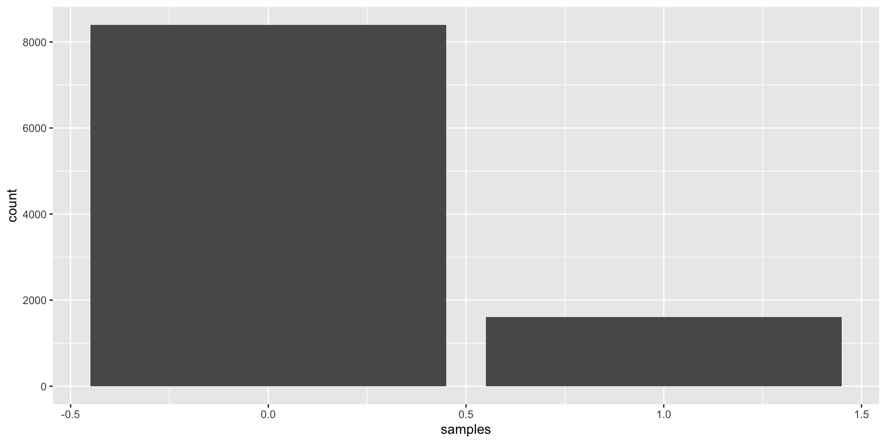

Lab 2: Discrete Probability
January 28, 2026
Introduction
This week, we will use ggplot to visualize data:
Visualize descriptive statistics
Simple simulation studies
Visualize simulated data
Discrete distributions in R
ggplot Introduction
- Load the
tidyversepackage, which will load theggplot2and other packages.
Read Data into
R- Some datasets are including in R packages, such as the
irisdata:
- Some datasets are including in R packages, such as the
- Also download the `Titanic_Survival.csv` file from Blackboard and load it into your `R` session:Descriptive Statistics
Visualization is an essential tool to understand your data.
To use
ggplotto create a scatterplot , we need to specify dataset, \(x\)-axis and \(y\)-axis

An empty plot!
Descriptive Statistics
- Add types of plot we want, for example:

Descriptive Statistics
- To make a barplot, only
xaesthetic is needed:

Descriptive Statistics
- To learn more about different methods, we can check the help page by:
- If you have any question on any command, looking at the help page (
?) is a good start.
Simulation and Visualizing PMFs
- This section covers topics below:
- Bernoulli distribution
- Binomial distribution
- Multinomial distribution
- In this section, we will talk about how to visualize discrete distributions using probability mass functions (PMFs).
Functions in R
- In R, many stats functions have already been installed:
In R, the command names are usually defined by
r,d,qplus simplified function name likebinom,normorlnorm.rmeans “randomly sample from the function”. This function can be used to generate data from a specific distribution.dmeans “density”. It gives the probability of an outcome (discrete functions only).qmeans “quantile”. It gives the quantile associated with a given probability.pcumulative distribution function. It gives the probability of an outcome at or below a quantile. This is the inverse function ofq.
Functions in R
- Still, if you have any questions, use…
- You can find the information for
rbinom,pbinom.qbinomandrbinomin the same help page.
Simulation
There are two ways to generate large discrete datasets from
R:sample- Distribution-specific functions like
rbinom
Simulation with sample
The following code generates 10,000 0’s and 1’s where 1 is drawn with probability 1/6. We can imagine this as the probability of rolling a 6 on a die.
Because this is a random sampling process, we may get different results every time we run the code. If we want to perfectly replicate a simulation process, we can use set.seed before generating data.
Visualize the Result
An Equivalent Method to Simulate Data

Other Discrete Distributions
The previous example sampled from the Bernoulli distribution, which describe an event with dichotomous (0/1) outcome.
size = 1indicates 1 observation,probis the fixed probability of “event =1”.
The result shows probability of “event =0” and probability of “event =1”. The probability of “event =2” is 0, because it is not one of the possible outcomes.
If you roll 1 die, you cannot observe 2 6’s.
Other Discrete Distributions
The binomial distribution is a generalization of the Bernoulli distribution that allows for greater values of size (e.g., rolling more dice).
The result shows if the probability of 0, 1, or 2 independent events if the probability of a single event is 1/6.
- For example, above represents the number of 6’s if you roll 2 dice.
Other Discrete Distributions
The binomial distribution generalized to the multinomial distribution. In the binomial distribution, we have several observations of dichotomous events (0/1). However, in the multinomial distribution, the range of events extends to \(n\) categories, “event =(1, 2, …, \(n\))”.
The sum of probabilities for individual events equals 1.
Each event is independent to each other.
For example, if the event has three categories (1, 2, 3), the probability of each event is 1/3, and we make 1 observation, what is the probability of observing the first event twice?
Other Discrete Distributions
- We can generalize the multinomial distribution to more complicated conditions. For example in lecture:
How to interpret this result?
Other Discrete Distributions
Negative Binomial Distribution
- For a series of Bernoulli trials with a certain probability of “event = 1”, what is the probability that “event = 1” occurs
sizenumber of times before we observe “event = 0”xtimes?
- For a series of Bernoulli trials with a certain probability of “event = 1”, what is the probability that “event = 1” occurs
You can also use mu to code the dnbinom, as we learned:
\[\mu = (1-prob) * size/prob\]
Other Discrete Distributions
Poisson Distribution
- The Poisson represents how many times “event = 1” occured in a certain time interval, if the average rate of “event = 1” is a constant \(\lambda\).
Simulation from Poisson Distribution
Simulation from Poisson Distribution
We can verify the probability using:
Activity Part 1
Pick one distribution of interest below, simulate 10,000 observations with parameters (e.g., probability) of your choice. Visualize your simulated dataset.
Bernoulli distribution
Binomial distribution
Negative binomial distribution
Poisson distribution
Multinomial distribution (Difficult)
- If you simulate data from multinomial distribution, you will get a matrix instead of a vector. How can you visualize the matrix using ggplot2?
- It needs command not covered in the lab. Feel free to use help page and google. Find your own way out!
Activity Part 1
Tips
Activity Part 2
Consider the following variables in the Titanic data (data2 that you imported earlier).
pclass: 1 = 1st class, 2 = 2nd class, 3 = 3rd classsurvived: 1 = yes, 0 = nosex: female, maleage: in years
Test out ways to visualize these data. Feel free to consider types of plots that we did not explicitly learn about in this class!